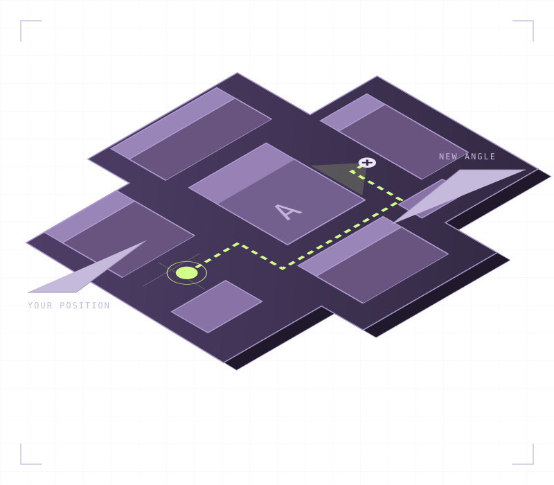

WIN THE DUEL
Mechanics that hold up.
Crosshair placement, movement, and cleaner first shots. Build control you can take into a real match.
AIM & MOVEMENTVALORANT COACHING / A NEW PERSPECTIVE
You don’t need another hundred ranked games.
You need to know what to do differently.
Focused coaching for Silver–Ascendant players.
Better decisions. Cleaner rounds. A plan that sticks.

THE FOCUS
Find the habits holding you back.
Build the ones that win rounds.
WIN THE DUEL
Crosshair placement, movement, and cleaner first shots. Build control you can take into a real match.
AIM & MOVEMENTREAD THE ROUND
Know when to take space, when to rotate, and when to stay alive. Turn information into a decision.
GAME SENSEMAKE YOUR IMPACT
Go beyond memorized lineups. Time your abilities, set up a teammate, and make your role count.
AGENT & TEAM PLAYTHE METHOD
One VOD. One clear priority.
Something concrete to work on next game.
“Clear one angle at a time.
Give yourself a fair fight.”
Review your VOD together. Find the decision behind the outcome.
Leave with a focused drill and one habit to practice in your next queue.
Apply it under pressure. Review what changed, then build from there.
IN YOUR CORNER
Meet Kai “Koda” Ren.
A calm voice in a chaotic game. Koda’s coaching starts with the question behind every play: what were you trying to achieve?
No highlight-reel lectures. Just honest feedback, space to ask questions, and a practical next step.
Fictional coach profile, created for this portfolio concept.
THE OFFANGLE MINDSET
The badge follows the habits.
Start with the next decision.